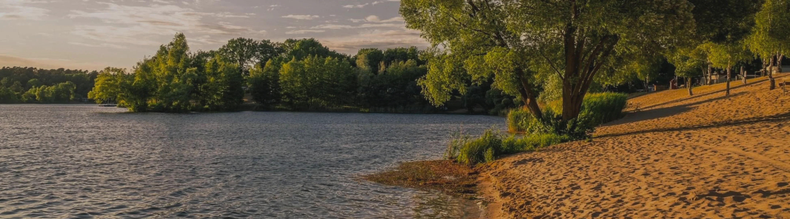
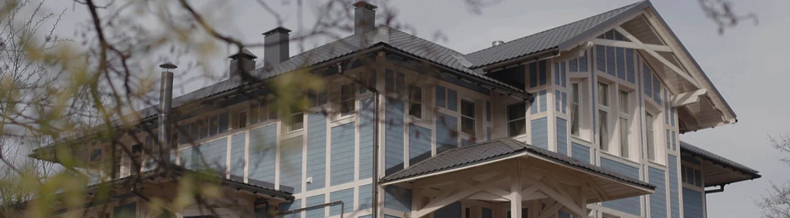
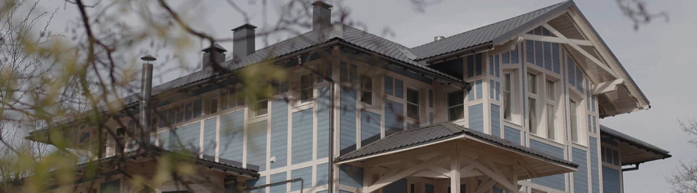

Маршруты
Все маршруты
 60 км
60 км на день 60 км на день 60 км на день
на день 60 км на день 60 км на день
Ляпота Тульской области
природный
тренировка
60 км на деньЛяпота Тульской области
природный
тренировка
60 км на деньЛяпота Тульской области
Маршрут знакомит с тихими и красивыми уголками Тульской области — местами, где природа, сельская жизнь и история переплетаются.
природный
тренировка
60 км на день